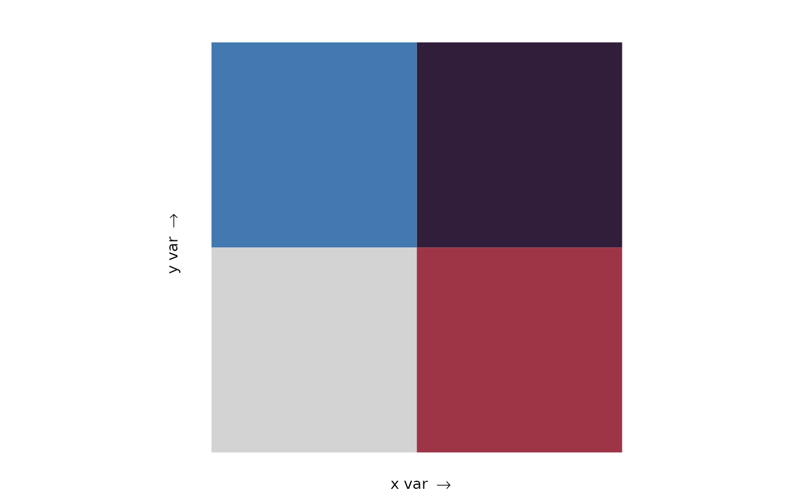
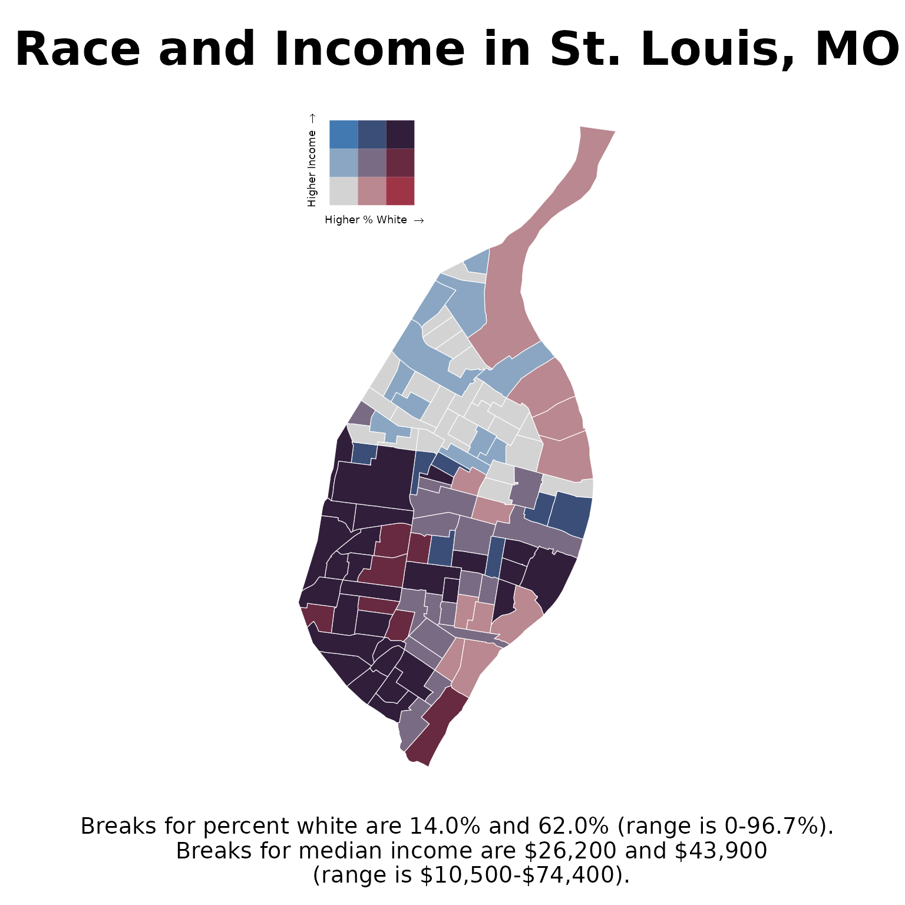

This vignette shows you how to use palettes as bivariate colour and fill scales with biscale.
Custom palettes
Colour vectors are naturally compatible with biscale, but with two important differences:
- Colour vectors must be named
- Colours in the vector must be specified as hexadecimal strings of the form “#rrggbb”
The name of each colour is used to specify its location in the bivariate scale.
named_colour_vector <- pal_colour(c(
"1-1" = "#d3d3d3", # low x, low y
"2-1" = "#9e3547", # high x, low y
"1-2" = "#4279b0", # low x, high y
"2-2" = "#311e3b" # high x, high y
))
named_colour_vector
#> <palettes_colour[4]>
#> • #D3D3D3
#> • #9E3547
#> • #4279B0
#> • #311E3B
names(named_colour_vector)
#> [1] "1-1" "2-1" "1-2" "2-2"Names can also be added to unnamed colour vectors with
names():
unnamed_colour_vector <- pal_colour(
c("#d3d3d3", "#9e3547", "#4279b0", "#311e3b")
)
names(unnamed_colour_vector)
#> NULL
names(unnamed_colour_vector) <- c("1-1", "2-1", "1-2", "2-2")
names(unnamed_colour_vector)
#> [1] "1-1" "2-1" "1-2" "2-2"To preview the bivariate palette use
biscale::bi_pal():
bi_pal(named_colour_vector, dim = 2)
Creating maps
To create maps with colour vectors and colour palettes, we can follow the general workflow covered in the Get started article in biscale. The article demonstrates how to create bivariate scales using race and income data from U.S. Census tracts for the City of St. Louis in Missouri. We will recreate that map here using a custom colour vector.
We begin by mapping race (the percentage of white residents) and
median income values to a bivariate scale with
biscale::bi_class():
race_income <- bi_class(
stl_race_income,
x = pctWhite,
y = medInc,
dim = 3,
style = "quantile",
keep_factors = TRUE
)Then create our named colour vector. There are more colours here than in the previous example because we will be using a three-by-three bivariate map instead of a two-by-two map.
named_colour_vector <- pal_colour(c(
"1-1" = "#d3d3d3", # low x, low y
"2-1" = "#ba8890",
"3-1" = "#9e3547", # high x, low y
"1-2" = "#8aa6c2",
"2-2" = "#7a6b84", # medium x, medium y
"3-2" = "#682a41",
"1-3" = "#4279b0", # low x, high y
"2-3" = "#3a4e78",
"3-3" = "#311e3b" # high x, high y
))The bivariate legend used in biscale is actually a ggplot2 plot, so
we create the map and legend separately, then combine them. Here we
combine the map and legend using
patchwork::inset_element():
# Draw map with a bivariate fill scale
race_income_plot <- ggplot(race_income, aes(fill = bi_class)) +
geom_sf(color = "white", size = 0.1, show.legend = FALSE) +
bi_scale_fill(pal = named_colour_vector, dim = 3) +
labs(
title = "Race and Income in St. Louis, MO",
caption = "Breaks for percent white are 14.0% and 62.0% (range is 0-96.7%).
Breaks for median income are $26,200 and $43,900
(range is $10,500-$74,400)."
) +
bi_theme()
# Draw the bivariate legend
bivariate_legend <- bi_legend(
pal = named_colour_vector,
dim = 3,
xlab = "Higher % White ",
ylab = "Higher Income ",
size = 7
)
# Combine the map and bivariate legend
race_income_plot +
inset_element(
bivariate_legend,
left = 0,
bottom = 0.8,
right = 0.5,
top = 1,
align_to = "plot"
)